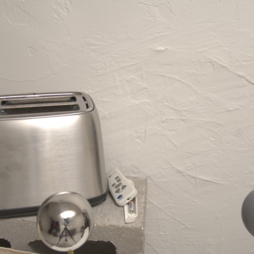

Object-Level: Comparisons with State-of-the-Art
Input
WS-SIR
Neural Gaffer
IC-Light
DelightNet
Ours
Ground Truth
Scene-Level: MIT Multi-Illumination Dataset
Input

Latent-Intrinsics
Ours
GT

Acknowledgements
We thank Peter Kulits for discussions, proofreading, and Suraj Bhor for helping us with the baselines. We thank Nikos Athanasiou for providing feedback. We are very grateful for the support provided by Tsvetelina Alexiadis, Florentin Doll, Markus Höschle, Arina Kuznetcova, Tomasz Niewiadomski, Taylor Obersat and Tithi Rakshit with the data and Rick Akkerman for his help with code. We thank Prerana Achar, Radek Daněček, Shashank Tripathi and Anastasios Yiannakidis for their support with visualizations. We additionally thank Peter Kulits for his effective ninjutsu skills. Finally, we thank Pramod Rao for fruitful discussions and constant support.